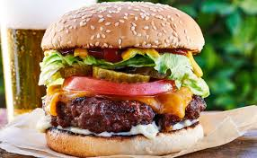
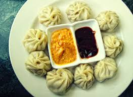

Pizza

a dish of Italian origin, consisting of a flat round base of dough baked with a topping of tomatoes and cheese, typically with added meat, fish, or vegetables.
Burger

A hamburger (also burger for short) is a sandwich consisting of one or more cooked patties of ground meat, usually beef, placed inside a sliced bread roll or bun.
Momos

Momo is a type of steamed dumpling with some form of filling. Momo has become a traditional delicacy in Nepal, Tibet, as well as among Nepalese and Tibetan communities in Bhutan, as well as people of Ladakh, Northeast India and Darjeeling regions of India